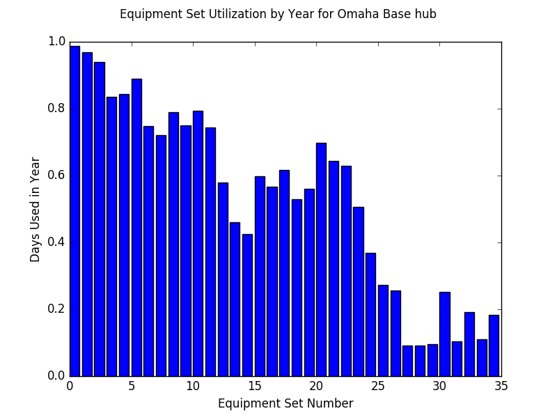

Reporting¶
Upon completion of the hauler routing for every day in our data set, we are left with three complete pieces of information.
- how much demand each site had each day (smoothed)
- how many miles the fleet of haulers worked each day
- how many hours each hauler worked each day
All of this information we then compile into a report which can then be used to make a calculation as to the cost of this variation’s delivery system.
Equipment Hauler Cost¶
The first step in the reporting process is to summarize how often each hauler is utilized. Each day when we recorded the hours each hauler worked, we assigned hours to haulers from greatest to least, so the first hauler got the most hours, the second got the second most, etc. By doing this, when we average how many hours each hauler works each day and how many days in a year each hauler worked, we ensure the fewest amount of haulers do the greatest amount of work. Based on how often each hauler is utilized a decision can be made as to whether or not that hauler needs hired and his semi needs purchased, or if overtime by other haulers can be worked to cover the extra drop-offs and pick-ups. Later in the reporting process, this decision can be reinforced by graphs mapping out how much each hauler works on each day, telling us whether or not such an overtime strategy would be effective in replacing a given equipment hauler. With this information we can calculate how many haulers and semi-trucks we need to meet our demand.
For example, the image below illustrates what the results of this summary might look like. It’s pretty easy to tell that the last three haulers probably do not need hired. The second image typifies the graph that maps how much each hauler works each day, and supports the last three not being hired as \(4\)‘s hours are pretty spread out, could be covered by another hauler working extra, and are greater than \(5\)‘s and \(6\)‘s.


Semi-Truck Cost¶
Next we can induce how much needs spent on equiping our haulers with semi- trucks. We already know how many trucks will be needed (as we would like one for each hauler), but another part of the cost comes from how often we have to replace the semi-trucks based on how many miles they run per period of time. This part of the calculation can be made by summing the total number of miles the fleet runs each day for our time period. This number then can be used to forecast how many times semi-trucks would need to be repurchased over a long range of time. An example of this number appears at the top of the first image.
Equipment Sets Cost¶
One final crucial piece of information has yet to be determined for making our cost calculation, and that is how many sets of equipment will be needed for this system to work. For each day in our time range, we repeated the following process:
- If a set of equipment is at a site, mark it as in use. If it gets picked up from that site later in the day, it is still being used as it either goes to another site or spends the day returning to the hub.
- If a site has a demand for equipment to be picked-up, assign that number of that site’s sets of equipment to be free for usage elsewhere.
- If a site has a demand for equipment to be dropped-off, assign that number of sets of equipment to that site. This can include the sets of equipment that were just released, as haulers can meet one site’s demand for drop-offs by picking-up from a site that released equipment on that day.
- If a set of equipment is at a site, mark it as in use. We repeat this step to ensure that additional sets of equipment that were brought out to job sites, if necessary, are counted as in use.
Also worth noting in the process, the sets of equipment are indexed in increasing order, and assignment is made to the set of available equipment with the lowest index, ensuring we use the smallest number of equipment sets for the majority of the work.
From here we make two graphs to illustrate the machine set usage. The first graph depicts how often each set of equipment gets used, helping us decide whether or not a given set of equipment should be bought or rented. The second graph shows us how much additional utility each set of equipment adds, further detailing how many equipment sets are needed to meet the demand. With this information, we can now infer how many sets of construction equipment are needed as well as how much each set will cost (difference in buying vs. paying per use with renting). An example of the first graphic is shown below.
Decision¶
At this point, all of the above information is compiled into a single report
corresponding to the given variation of a region, and can be used to calculate
the cost of this variation’s delivery system. For an example of what a final,
compiled report looks like, I invite you to download this pdf. There are two things I’d like to point out at this
time about making the calculation on total cost. The graphs above and in the
report give no recommendation on how many assets to buy, as it was preferred
by the construction company to interpret themselves. There is also no unit
cost listed for any of the assets as the company asked that the finances of
their potential investments be kept private. However, the report that the
code saves at the end, like the one available to download, can be used for
figuring out how many of each asset is necessary for a delivery system and,
with one’s own financial assumptions, an estimation on cost can be made.
Providing that there exists at least one variation in each region that costs less than the current process of transporting equipment sets, it would be advised that the construction company change their equipment transportation method to the internal delivery system.
With a full means now of understanding how a decision can be made, I invite you to look at my closing remarks on the project.
Continue to Conclusion